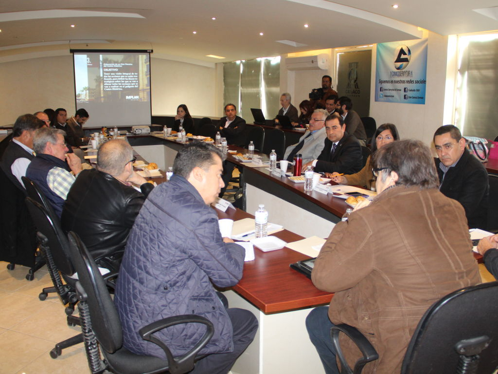

El Instituto Municipal de Planeación y Competitividad (IMPLAN) de Torreón llevó a cabo la Primera Sesión Ordinaria de su Consejo Directivo en 2016, esto en las instalaciones de la Cámara Nacional de Comercio (CANACO) de Torreón el pasado 22 de enero, en donde el director del organismo, Eduardo Holguín Zehfuss, dio a conocer el Plan de Trabajo para este año a los consejeros.
Presentó avances del Plan Estratégico Metropolitano, el cual se distingue por ser un esfuerzo de planeación participativa con responsabilidad y gobernanza que pretende promover y construir un compromiso colectivo con aportaciones ciudadanas y en talleres de trabajo para atender los retos y desafíos que condicionan el desarrollo de la Zona Metropolitana.
Se informó que para 2016 la plataforma web del IMPLAN tendrá una aplicación para teléfonos celulares Android con el fin de que los habitantes de Torreón puedan consultar en sus móviles los más de 238 indicadores con los que se cuenta.
Además, este año se desarrollarán indicadores específicos por colonia, un Inventario Urbano para la ciudad, un Sistema de Información Geográfica Metropolitano y se impartirán capacitaciones del uso de la plataforma web del IMPLAN a dependencias municipales.
Por otro lado, se creará el Plan de Movilidad no Motorizada, contando con la asesoría del Instituto de Políticas para el Transporte y el Desarrollo (ITDP), con el fin de desarrollar un sistema de movilidad urbana que integre a los modos no motorizados de transporte dentro de la movilidad cotidiana, contribuyendo en el crecimiento de una ciudad accesible, compacta y sustentable a través de acciones de infraestructura, programas de fomento, educación y seguridad vial.
Como último punto se dio a conocer el proyecto de elaboración de un Plan Maestro del Centro Histórico, definiendo las líneas estratégicas sobre todas las acciones que involucren a este polígono.
Consejeros como Alberto Allegre, de FOMEC, externaron su opinión en favor de contar con una plataforma del IMPLAN que involucre a todos los municipios de la Comarca Lagunera, mientras que el ambientalista Francisco Valdés Pérezgazga se pronunció en favor de impulsar un reglamento de movilidad en Torreón que ponga como prioridad al peatón.
Por su parte, Martín López, rector del Tecnológico de Monterrey, habló de la importancia de definir un rumbo y una identidad para la ciudad de Torreón donde participen todos los sectores de la sociedad.
